Cherry Tsai'S |
Cherry 蔡明娟，水瓶座女生，生日是非常感性的日子 － 西洋情人節！ |
||||||||||||||
畢業後於亞誠有限公司擔任網頁設計行銷職務，負責公司各部門FB行銷或管理以及餐飲部的行銷文案編輯，負責公司兩個網頁 (分為對國內及外商接洽之網頁) 設計及更新等工作。必要時，支援其餘部門商品修圖或相關布置製作；於餐飲部門美編職務異動時期支援店內擺設、窗貼及長期使用的餐卡、店卡或相關周邊等…設計。後期負責過餐飲部門部分活動，相關廠商接洽及初期規劃聯繫等…。 |
||||||||||||||
|
在設計相關研究部份，則是源於報考設計科門的初衷，往「感性工學設計」的方向做研究；針對貼近環保議題的樂活生活文化，如何將其感性訴求融入環保餐具的設計中做探討研究。提出在使用上與兩性使用者於設計風格與大眾感性認知做統計研究。也因此，對於人文生活文化、設計風格及統計相關研究方法方面，因研究論文而獲益良多。 |
若未來有幸進入貴公司也期望能利用自己所學，對於設計及多媒體或網頁等方面更加增近。 |
相關經歷 亞誠有限公司 網頁設計行銷 ArtsIT2009互動多媒體藝術展 花蓮麻薯QQ大作戰作品 組長 卡司創意工作室 實習 |
論文、期刊 蔡明娟、汪祖胤，樂活概念應用於環保餐具設計之研究，國立東華大學－藝術與設計學系碩士班 |
參展 蔡明娟，光與能(光影城市)第二屆海峽兩岸創意設計作品巡迴展 蔡明娟，TIME ，東華大學藝術與設計研究所LOOP影像聯展 |
|||||||||
於是...我開始想
也許是我不夠了解他人的感覺，也許是我不能突顯出重點。 |
||||||||||||||
決定晚考設計科門研究所，畢業後報名了Illustrator、Photoshop、3D maya的學習課程。也因在學校接觸的Flash、Dreamweaver、Html基礎語言等...經驗，對於軟體及程式概念較其他同學熟悉許多。在研究所時期與同學學習素描及相關藝術與設計概念，對於劇本編寫及媒體攝影、拍攝、流程、製做及剪接都有接觸。同時運用大學時期學的程式概念參與工作坊，並製作互動相關作品，並且將其成品報名參加國際學術研討之展覽。 |
中正紀念堂創意市集噴漆活動 參與人員 草本吉1001公司LOGO、名片 東華大學教育學院logo、院網 東華大學國際藝術節開幕晚會 主持 東華大學藝術與設計學系 課堂助教、專案工讀、院辦工讀 東華大學教育學系 教育部 專案工讀生 |
汪祖胤、蔡明娟（2009），文化創意產業設計─東部樂活自行車與文創結合之問題評析，2009idci文化創意產業設計、傳播與科技應用國際研討會，194-203。 蔡明娟、汪祖胤（2010），台灣觀光休閒產業創新發展─樂活樂活概念與休閒文化結合模式之研究，地方特色觀光與休閒產業經營管理研討會論文集，85-102。 |
田名璋、蔡明娟、郭奇育、劉庭萱，花蓮麻薯QQ大作戰，2009年科技藝術國際研討會ArtsIT2009互動多媒體藝術展－之間 田名璋、蔡明娟、郭奇育、劉庭萱，花蓮麻薯QQ大作戰，國立東華大學 太平洋的風「東方不敗」—從設計看見東台灣 |
|||||||||||
 |
||||||||||||||
|
|
Thank you for watching .... |
Portfolio of Cherry Tsai 蔡明娟 |
|||||||||||
網頁相關 設計 |
| 已上線網頁連結: |
| TheJeansBar.com.tw |
| Axcellent.com.tw |
商品、活動 |
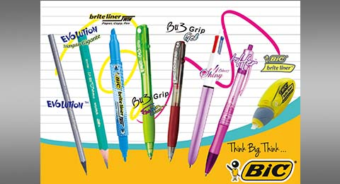
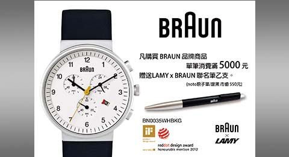
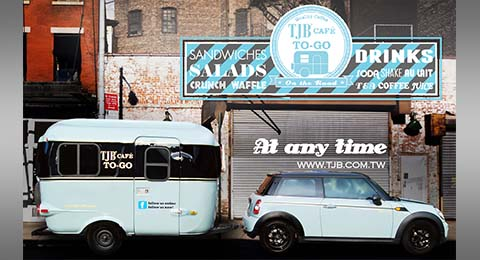
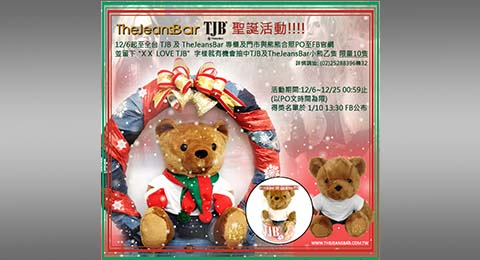
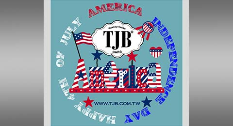
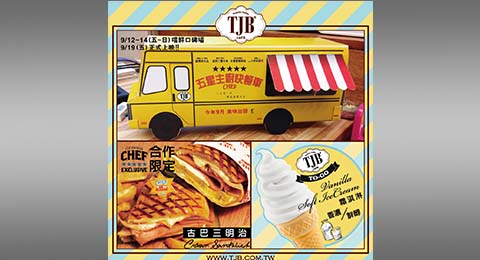
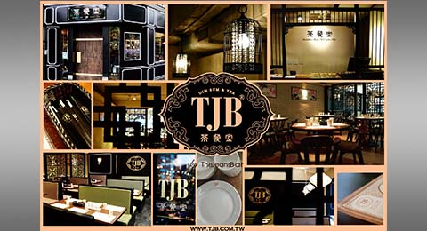
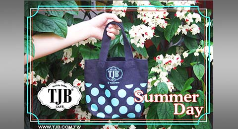
FB、餐點行銷 |
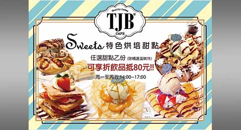
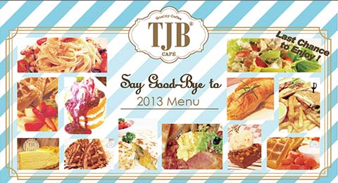
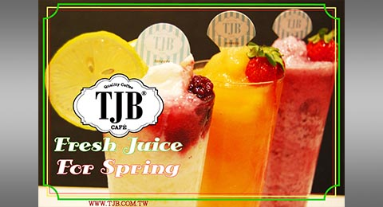
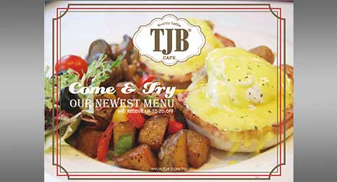
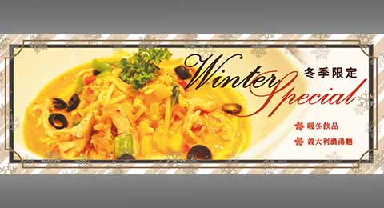
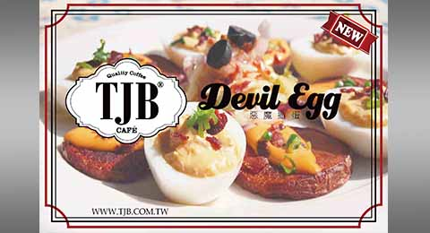
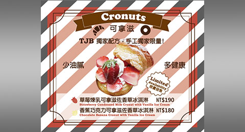